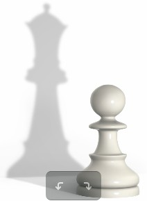

История одной пешки
Здравствуйте! Я рады приветствовать вас на сайте Портфолио. Автор прозы «Владлен Бахмат»! На шахматной доске их было восемь. Не больше и не меньше. Ровно восемь белых пешек. Перед началом сражения им сказали, чтобы они были смелыми, шли вперед и тогда, дойдя до последней горизонтали, они смогут, по своему желанию, превратиться в любую шахматную фигуру: коня, слона, ладью или даже в шахматную королеву. Конечно же, каждая из восьми пешек решила, что непременно станет шахматной королевой. В этот день битва между черными и белыми фигурами разгоралась нешуточная. Партия только началась, а обе стороны уже понесли потери: белые – коня, а черные – слона. Поредели и пешечные шеренги. Белая пешка g2 c завистью смотрела на своих товарищей, отважно сражавшихся в центре поля. Особенно она завидовала королевской пешке – та сумела продвинуться дальше всех и даже смогла сразить вражеского слона, в несколько раз превосходящего ее по силе. Нашей же пешке в этой партии было поручено охранять королевский домик, находящийся в стороне от главных событий. Казалось, пешке g2 оставалось только издали наблюдать за боем и ждать окончания партии. Но вот, совершенно неожиданно для белых, черные перенесли всю свою мощь на правый фланг, как раз туда, где пешка g2 вместе с двумя другими пешками охраняла своего короля. Удар был настолько ошеломляющим, что пешка, находящаяся справа от нашей героини, буквально была сметена с доски черной королевой, ворвавшейся в лагерь белых на черном коне. Задача пешек и всех фигур – защищать своего короля, и пешка g2 вместе с другой пешкой отважно бросились на самого страшного и опасного врага, давая возможность своему королю отступить в центр шахматной доски. Но силы были слишком неравны. Стоящую слева от g2 пешку ловким ударом сбил с доски черный конь. Но отчаянное сопротивление белых пешек было не напрасно. Пока сражались пешки, белые фигуры успели прийти на помощь своему королю, и битва с новой силой разгорелась в центре поля.
Пешка g2 оказалась на правом фланге совершенно одна без поддержки и прикрытия. А без поддержки и прикрытия пешки очень слабы – они не умеют отступать и уворачиваться от вражеских ударов. Они могут только идти вперед. И пешка g2 сделала то, что умела. Она рванулась вперед. На ее рывок, вначале, никто не обратил внимания – все были захвачены сражением в центре доски. Белым фигурам приходилось очень туго. Белый король без пешечной защиты, в центре поля был очень уязвимым, и черные спешили воспользоваться своим преимуществом. Пешка g2 сделала еще один шаг вперед. Теперь, вдали от своих позиций, она могла двигаться только маленькими шажками. После этого шага на нее набросилась черная пешка. g2 отбила атаку и сделала еще один, такой трудный для нее, шаг вперед и оказалась одна против целого лагеря черных. Над головой отважной пешки взметнулось сразу несколько вражеских мечей…
Белый король заметил отважный рывок пешки и послал ей на помощь слона. Черная защита отвлеклась на слона, и белая пешка сделала еще один шаг вперед. Теперь до заветной цели – последней горизонтали белой пешке оставался всего один шаг. Всего один шаг теперь отделял ее от мечты – мечты стать шахматной королевой! Как ей теперь должны были завидовать все белые пешки! С каким уважением теперь должны смотреть на нее фигуры и сам король! И пешка g2 не выдержала и торжествующе оглянулась. То, что она увидела, потрясло ее. На поле из ее товарищей почти никого не осталось. Некому было видеть ее торжества. Не было больше на шахматной доске, кроме нее, ни одной пешки. Из фигур остался только один конь. Весь израненный он был заблокирован черными фигурами в левом нижнем углу шахматного поля. Королю тоже было теперь не до пешки – один в окружении врагов, он отбивал их атаки своим коротеньким мечом. Черная королева уже занесла над белым королем свой длинный меч и на следующем ходу собиралась объявить ему мат! Все это увидела пешка g2. И еще она увидела, что если она превратится не в белую красавицу – королеву, а в коня, то сможет объявить мат самому черному королю! Только конь в той ситуации мог допрыгнуть до самой важной черной особы – короля! Пешка задумалась. Перед ней был выбор – хоть на мгновение стать королевой либо спасти своего короля! Такой шанс стать королевой одной пешке в партии выпадает только раз, да и то, далеко не всегда. Казалось, глупо было им не воспользоваться. Шахматные часы отсчитывали последние секунды. Нужно было принимать решение. И тут g2 вспомнила всю битву. Вспомнила, как буквально вихрем, были сорваны с доски пешки, стоявшие рядом с ней, вспомнила храбрую королевскую пешку, вспомнила слона, пожертвовавшего собой ради того, чтобы она сумела дойди до последней горизонтали, вспомнила все остальные пешки и фигуры, учавствовавшие в сражении. «Нет, пускай я никогда не стану королевой, но я не могу допустить, чтобы все эти жертвы были напрасными!» - решила белая пешка. И она сделала последний ход в этой партии: пешка - конь g8 МАТ!!!